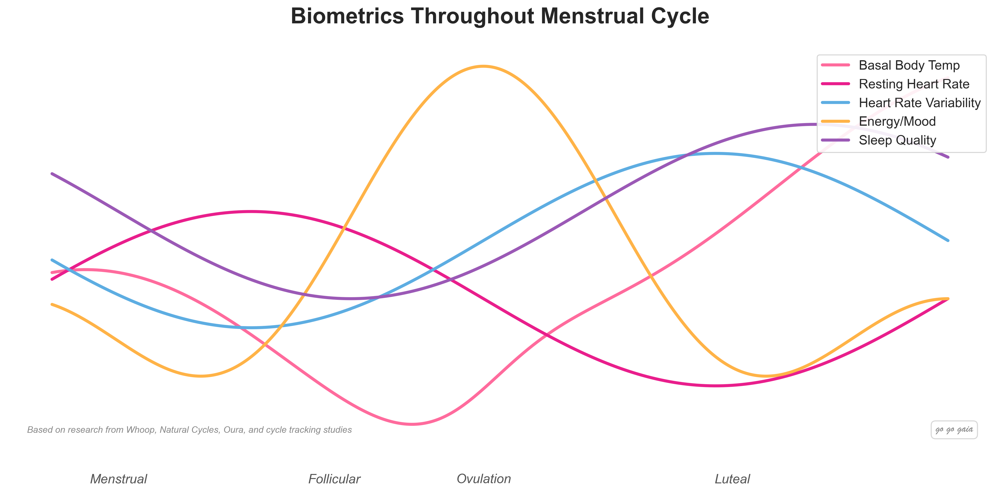

Best Chronic Symptom Tracker App for Women 2026: 7 Apps Compared

PMDD that wipes out a week every month. Endo pain doctors keep dismissing. PCOS symptoms that don't fit a single category. Migraines that cluster around ovulation. Your symptoms aren't random, but you need data to prove it. Here's how 7 apps handle chronic-symptom tracking for women.
Quick Answer: Best Chronic Symptom Tracker for Women?
- Best for flexible chronic-illness tracking: Bearable. 200+ pre-built symptoms, unlimited custom, correlation engine
- Best dedicated endo research app: Phendo. Built by Columbia University researchers, free, endo-specific
- Best for community and AI symptom matching: Flo. 77M users, Symptom Checker that flags endo, PCOS, fibroids
- Best science-backed cycle + symptom tracker: Clue. Evidence-based, 200+ symptom options, clean interface
- Best all-in-one (symptoms + cycle + lifestyle): Go Go Gaia. Pain, mood, nutrition, fitness, sleep, cycle, and wearables in one free app
- Best for privacy: Embody. Local-first, encrypted, open-source
- Best for modern UX & younger users: Stardust. Beautifully designed, ad-free, growing community
Women's chronic symptoms are usually cyclical. That migraine that "comes out of nowhere" often clusters around ovulation. PMDD flares show up in the luteal phase like clockwork. Endo pain has triggers. PCOS symptoms shift across the cycle. They're not random. You just need the data to see the pattern.
A good chronic symptom tracker connects the dots between what you're feeling, when you're feeling it, and what might be triggering it. The best ones link symptoms to your cycle, sleep, diet, stress, and medications. This guide compares 7 apps on what actually matters for chronic conditions: pain detail, trigger spotting, medication tracking, and clean reports you can hand a doctor who has 12 minutes for your appointment.
Full Transparency
This guide is published by Holland Neurotech Inc., the company behind Go Go Gaia. We've compared each app based on its actual symptom tracking features, recent user reviews, and publicly available information. Every app here has real strengths, and the best one for you depends on your specific situation.
Our goal is to help you find what works, whether that's Go Go Gaia or another app.
Educational content, not medical advice. For personal concerns, please consult your doctor.
Step 1: Why Chronic Symptom Tracking Matters for Women
Most chronic symptoms women experience are tied to hormonal fluctuations across the menstrual cycle. Estrogen and progesterone shift weekly, and those shifts move pain sensitivity, gut motility, sleep quality, mood, and inflammation along with them. Without tracking, the pattern is invisible. With three months of data, it's obvious.
The Cycle Connection
Research shows that migraines, bloating, acne, fatigue, mood changes, digestive issues, and joint pain often follow cyclical patterns. "I always get migraines around day 22" or "my energy crashes the week before my period" aren't random observations. They're data points your doctor can actually use, and they're the difference between an appointment that ends in "it's just stress" and one that ends with a real diagnosis.
Beyond the Cycle
Symptoms don't exist in isolation. What you eat, how much you sleep, your stress levels, your exercise habits, and your medications all interact with your cycle and your symptoms. The most useful chronic-symptom trackers capture multiple factors so you can see the full picture instead of guessing.
What to Look For
Before choosing an app, think about what matters most:
- Pain detail: Can you log severity, location, and quality, or just yes/no?
- Custom symptoms: Can you create your own tracking categories, or are you limited to a preset list?
- Trigger and correlation insights: Can the app show you what makes symptoms better or worse?
- Cycle integration: Does the app connect symptoms to your menstrual cycle phases?
- Medication tracking: Can you log meds and supplements with start dates to see whether they're actually helping?
- Doctor-ready exports: Can you share your tracked data as a clean report?
- Privacy: Who sees your health data?
Tracking by Condition: Jump to Your Specific Guide
The right tracker depends partly on what you're tracking. Each of these conditions has its own playbook, app requirements, and pitfalls. We've built dedicated comparison guides for each:
- Endometriosis. 7 apps compared on pain location, flare triggers, medication tracking, and surgery history. Includes Phendo (Columbia University's endo-specific research app).
- PCOS. 7 apps compared on irregular cycle handling, weight and metabolic tracking, hair/skin symptoms, and lab results.
- Perimenopause. 8 apps compared on hot flash logging, HRT tracking, irregular cycles, and the 30+ symptoms that can show up in the menopause transition.
- Fertility / TTC. 8 apps compared on ovulation tracking, BBT, LH testing, and cycle prediction accuracy.
- Period and PMS. 6 apps compared on cycle predictions, period symptoms, and PMS tracking.
If your symptoms span multiple conditions (common with PMDD + endo, or PCOS + perimenopause), the apps below handle the cross-condition case. Start with the comparison closest to your primary condition, then come back here for the all-in-one options.
Step 2: The 7 Apps Compared
For Flexible Chronic-Illness Tracking: Bearable
Best if you want: Maximum customization for complex chronic conditions. Track any symptom or factor and let the correlation engine show you what's connected.
Key Features
- 200+ pre-built symptoms, plus unlimited custom symptom creation
- "Impacts" view shows correlations between tracked factors and outcomes
- Mood, energy, pain, sleep, and medication tracking
- Period tracking as an optional module
- Weekly reports with customizable graphs
- Data export for healthcare providers
- Wearable integration (Apple Health, Google Fit, Withings, Whoop, Polar)
Strengths
- The most customizable symptom tracker available. No limits on categories
- 4.8/5 on App Store (4K ratings), 4.7/5 on Google Play (8.6K ratings). 900,000+ users
- Popular with the chronic illness community (PCOS, PMDD, endometriosis, IBS, migraines)
- Correlation engine is excellent. It shows connections you'd never spot manually
- Intentionally collects minimal personal data. Doesn't ask for name, age, or sex
- GDPR-compliant, doesn't sell data
- Cross-platform (iOS and Android)
Limitations
- Not designed cycle-first. Period tracking is a module, not the core. If you want detailed cycle predictions, fertile windows, or pregnancy mode, you'll need a separate app
- Interface can feel overwhelming at first because there are so many options to configure
- No nutrition tracking (food logging, calories, macros)
- No cycle-specific features (ovulation tracking, phase predictions)
Who Should Choose This
- You have a chronic condition and want to track how everything interacts
- You want maximum control over what you track
- You care more about symptom patterns than cycle predictions
- You need an Android app
Pricing: Free (generous tier), Premium ~$34.99/year or ~$6.99/month.
Download: Available on iOS and Android
For Endometriosis-Specific Research: Phendo
Best if you want: The only major tracking app built specifically for endometriosis, developed by Columbia University researchers. Strong fit if endo is your primary chronic condition.
Key Features
- Designed specifically for endometriosis tracking from day one
- Daily logging of pain, mood, energy, GI symptoms, sleep, and bleeding
- Activity and functional impact tracking (work, exercise, social)
- Self-management tracking (medications, supplements, heat, exercise)
- Personalized reports for doctor visits
- Data contributes to ongoing endo research at Columbia
- Completely free, no premium tier
Strengths
- Academic credibility. Built by Columbia University's Department of Biomedical Informatics
- Endo-first design. Every field exists because endo patients said they needed it
- No ads, no upsells, no data selling
- Functional impact tracking goes beyond pain. You log whether symptoms kept you from working, exercising, or being social
- Free forever
- Cross-platform (iOS and Android)
Limitations
- Less polished interface than commercial apps
- No cycle prediction or fertile window tracking
- No wearable integration
- No nutrition or fitness tracking beyond simple logs
- Smaller user community than mainstream apps
Who Should Choose This
- You have or suspect endometriosis and want a purpose-built tool
- You care about contributing your data to endo research
- You want everything free with no premium upsell
Pricing: Free.
Download: Available on iOS and Android
Diving deeper on endo? See our full endometriosis app comparison.
For Community and AI Symptom Matching: Flo
Best if you want: The largest women's health community plus AI-powered symptom matching that can flag conditions to discuss with your doctor.
Key Features
- Symptom tracking alongside cycle phases
- Symptom Checker (premium) that matches symptoms to conditions like PCOS, endometriosis, fibroids, and perimenopause
- AI chatbot for health questions
- Perimenopause Score (added 2025) that tracks symptom progression
- Pattern spotting across cycle phases
- Extensive educational content library
- Anonymous Mode for privacy
Strengths
- The largest women's health app with 77M+ active users
- 4.8/5 on App Store. Familiar interface that millions already know
- Symptom Checker is genuinely useful for the pre-diagnosis stage of chronic conditions
- Cross-platform (iOS and Android)
Limitations
- Privacy history: FTC settlement in 2021 for sharing data with Facebook and Google. $59.5M class action settlement. Anonymous Mode added since
- Symptom Checker and many tracking features require Flo Premium (~$40/year)
- No custom symptom creation. You're limited to Flo's preset categories
- No nutrition or fitness tracking
- No wearable integration for symptom correlation
Who Should Choose This
- You're earlier in the diagnosis process and want AI symptom matching
- You already use Flo and want to add chronic-symptom tracking
- Community support and educational content matter to you
- You're comfortable with Flo's updated privacy practices
Pricing: Free (basic + ads), Flo Premium ~$40/year.
Download: Available on iOS and Android
For Science-Backed Symptom + Cycle Tracking: Clue
Best if you want: Evidence-based tracking with 200+ symptom options and a clean, no-nonsense interface.
Key Features
- 200+ symptom tracking options across multiple categories
- Cycle tracking with predictions based on past data
- 10 premium tracking categories (sleep quality, supplements, urine, etc.)
- Analysis views and cycle statistics
- Wearable integration (Oura, Withings, Whoop, Polar)
- Science-backed content reviewed by researchers
- Unlimited custom tags
Strengths
- Scored 13/15 in an Obstetrics & Gynecology journal study, the highest of any tracked app
- 200+ symptom options cover most situations without needing custom categories
- Clean, minimal interface that's easy to use daily
- 100+ million users worldwide
- GDPR-compliant (Berlin-based)
- Cross-platform (iOS and Android)
Limitations
- 10 premium symptom categories require Clue Plus (~$39.99/year). Free users get basic tracking only
- No nutrition, fitness, or habit tracking
- No correlation insights showing what triggers symptoms. You see the data but have to spot patterns yourself
- Some reports have raised questions about data broker practices, despite GDPR compliance
- Frequent prompts to upgrade to Clue Plus
Who Should Choose This
- You want evidence-based tracking with a clean interface
- You want lots of pre-built symptom options without needing to customize
- You prefer a minimal, focused tracking experience
- You need an Android app
Pricing: Free (basic tracking), Clue Plus ~$39.99/year.
Download: Available on iOS and Android
For Symptoms + Cycle + Lifestyle in One Place: Go Go Gaia
Best if you want: To see how your symptoms connect to your cycle, nutrition, sleep, fitness, and habits in a single app.
Key Features
- 20+ trackable symptoms with cycle phase correlation
- Mood, energy, and sleep tracking
- Nutrition tracking alongside symptoms and cycle
- Fitness and habit tracking
- Wearable integration (Apple Watch, Oura Ring, Garmin) for automatic temperature, HRV, and sleep data
- Correlation insights showing which lifestyle factors affect which symptoms
- Medication and supplement tracking
- Lab result tracking
- Doctor-ready data export
Strengths
- Connects symptoms to cycle phases AND lifestyle factors in one view. Other apps do one or the other, but few do both
- Correlation engine shows patterns like "your headaches are worse on weeks with less than 6 hours of sleep during your luteal phase"
- Wearable data adds automatic sleep, temperature, and stress tracking without manual logging
- Nutrition tracking is included. No need for a separate food logging app
- No ads, no data selling
Limitations
- iOS only. No Android version yet
- Designed cycle-first, which may feel like more than you need if you don't want to track your period
- Newer app with a smaller user community
- Full AI features require premium (~$12/month)
- Fewer pre-built symptom categories than Bearable (20+ vs 200+)
Who Should Choose This
- You want to understand how diet, sleep, exercise, and your cycle all affect your symptoms
- You use a wearable and want that data connected to your symptom logs
- You want one app instead of separate ones for symptoms, nutrition, fitness, and cycle tracking
- You want to bring organized data to doctor appointments
Pricing: Free (most features), Premium ~$12/month for full AI insights.
Download: Available on iOS App Store
For Privacy-First Tracking: Embody
Best if you want: Your health data to stay on your device. Encrypted, open-source, and designed by women.
Key Features
- Symptom tracking with severity ratings across cycle phases
- Cycle tracking with phase-based insights
- Mood and energy logging
- Cycle disruptors tracking (stress, travel, illness)
- Phase-based nutrition and lifestyle guidance
- Data stays on your device by default (local-first architecture)
- Open-source code you can verify yourself
- Custom symptom tracking (membership feature)
Strengths
- The strongest privacy approach of any health tracking app. Data is stored locally, encrypted from the point of entry, and the code is open-source
- 4.5/5 on App Store (165 ratings). 100,000+ downloads since August 2024 launch
- Women-led company (founder has personal experience with PMDD)
- No ads, no data brokers, no third-party data sharing
- "Pay what you can" membership model ($5, $10, or $15/month)
- Offline-capable. Works without internet
- Cross-platform (iOS and Android)
Limitations
- Very new (launched August 2024). Still a small team and small user base
- Some users report difficulty inputting cycle data, especially with irregular cycles
- Some users have reported data loss after app updates. The local-first approach means there's no automatic cloud backup (manual encrypted backup is available with membership)
- Smaller feature set than established apps. No nutrition, fitness, or wearable integration
- Focuses on awareness over prediction. Less algorithmic than Clue or Flo
- Custom symptom tracking requires the paid membership
Who Should Choose This
- Privacy is your top priority and you want verifiable claims (open-source)
- You want your health data to stay on your device, not on someone's server
- You prefer awareness-based tracking over algorithmic predictions
- You want to support a women-led company with ethical data practices
Pricing: Free (fully functional), Membership $5-15/month (pay what you can) for cloud backup, custom symptoms, dark mode.
Download: Available on iOS and Android
For Modern UX & Younger Users: Stardust
Best if you want: A beautifully designed cycle and symptom tracker without ads, with a younger and more design-forward feel.
Key Features
- Cycle tracking with daily check-ins
- Symptom and mood logging
- Pain tracking with severity scale
- Phase-based insights and content
- Clean, modern interface
- No ads
- Community elements
Strengths
- One of the best-designed period trackers on the market
- Strong with Gen Z and millennial users
- Quick, low-friction daily logging
- No ads even on the free tier
- Growing user community
- Cross-platform (iOS and Android)
Limitations
- Smaller symptom library than Clue or Bearable. Not designed for complex chronic-illness tracking
- No correlation insights or trigger analysis
- No wearable integration
- No detailed medication or surgery tracking
- Most advanced features behind a subscription
- Younger app, fewer years of feature maturity
Who Should Choose This
- You want a beautifully designed app for daily check-ins
- You're newer to tracking chronic symptoms and want something simple before going deep
- You already use it as a period tracker and want to layer in symptoms
- You value an ad-free experience over feature depth
Pricing: Free (basic), Premium subscription available.
Download: Available on iOS and Android
Feature Comparison Table
Here's how the 7 apps stack up on features that matter most for chronic-symptom tracking:
| Feature | Bearable | Phendo | Flo | Clue | Go Go Gaia | Embody | Stardust |
|---|---|---|---|---|---|---|---|
| Pre-built Symptoms | ✅ 200+ | ✅ Endo-specific | ✅ Preset list | ✅ 200+ | ✅ 20+ | ⚠️ Basic set | ⚠️ Basic set |
| Custom Symptoms | ✅ Unlimited | ⚠️ Limited | ❌ | ✅ Custom tags | ⚠️ Limited | 💰 Membership | ❌ |
| Pain Tracking (severity + location) | ✅ Detailed | ✅ Endo-focused | ⚠️ Basic | ✅ Free | ✅ Free | ✅ Severity scale | ⚠️ Severity only |
| Mood Tracking | ✅ Detailed | ✅ Free | ✅ Free | ✅ Free | ✅ Free | ✅ Free | ✅ Free |
| Sleep Tracking | ✅ Detailed | ⚠️ Basic log | ⚠️ Basic | 💰 Premium | ✅ + wearable | ⚠️ Basic | ⚠️ Basic |
| Medication/Supplements | ✅ Free | ✅ Free | ❌ | 💰 Premium | ✅ Free | ❌ | ❌ |
| Trigger / Correlation Insights | ✅ "Impacts" view | ⚠️ Basic | ⚠️ Basic (premium) | ❌ | ✅ Multi-factor | ❌ | ❌ |
| Nutrition Tracking | ❌ | ⚠️ Log only | ❌ | ❌ | ✅ Free | ❌ | ❌ |
| Cycle Integration | ⚠️ Module | ⚠️ Bleeding log | ✅ Core feature | ✅ Core feature | ✅ Core feature | ✅ Core feature | ✅ Core feature |
| Wearable Integration | ✅ Apple Health, Whoop, Polar+ | ❌ | ⚠️ Basic Apple Health | ✅ Oura, Withings, Whoop | ✅ Apple Watch, Oura, Garmin | ❌ | ❌ |
| Doctor Data Export | 💰 Premium | ✅ Free PDF | ⚠️ Limited | ⚠️ Limited | ✅ Free | ❌ | ❌ |
| AI Features | ❌ | ❌ | 💰 Symptom Checker | ❌ | 💰 Ask Gaia | ❌ | ❌ |
| Privacy | ✅ GDPR, minimal data | ✅ Academic standards | ⚠️ FTC settlement history | ⚠️ GDPR, data broker questions | ✅ No data selling | ✅ Local-first, open-source | ✅ No ads |
| Free Tier | ✅ Generous | ✅ Fully free | ⚠️ Limited + ads | ⚠️ Basic + upsells | ✅ Generous | ✅ Fully functional | ⚠️ Limited |
| Platforms | iOS + Android | iOS + Android | iOS + Android | iOS + Android | iOS only | iOS + Android | iOS + Android |
| Best For | Chronic illness | Endo-specific | Community + AI | Science-backed | All-in-one | Privacy | Modern UX |
Step 3: Making Your Decision
Here's the bottom line for each app:
Choose Bearable if:
- You have a complex chronic condition (PMDD, endo, PCOS, migraines, fibromyalgia) and want to track how everything interacts
- You want maximum customization with unlimited symptom categories
- You care more about trigger spotting and symptom patterns than cycle predictions
- You need an Android app
Choose Phendo if:
- Endometriosis is your primary chronic condition (diagnosed or suspected)
- You value academic credibility (Columbia University) over commercial polish
- You want everything free with no premium upsell
- You're willing to contribute your data to endo research
Choose Flo if:
- You're earlier in the diagnosis process and want AI symptom matching to guide doctor conversations
- You already use Flo and want to add chronic-symptom tracking
- Community support and educational content matter to you
- You're comfortable with Flo's updated privacy practices
Choose Clue if:
- You want 200+ pre-built symptom options in a clean interface
- Evidence-based, OB-GYN-involved tracking matters to you
- You prefer a minimal, focused experience
- You need an Android app
Choose Go Go Gaia if:
- You want to see how diet, sleep, exercise, stress, and your cycle affect your chronic symptoms
- You use a wearable and want automatic data alongside symptom logs
- You want one app instead of separate ones for symptoms, nutrition, fitness, and cycle
- You want to bring organized data to doctor appointments
Choose Embody if:
- Privacy is your top priority and you want verifiable, open-source claims
- You want your data to stay on your device, not on a company's server
- You're comfortable with a newer, smaller app
- You prefer awareness-based tracking over algorithmic predictions
Choose Stardust if:
- You're newer to tracking chronic symptoms and want something simple and low-friction
- An ad-free, beautifully designed app matters to you
- You already use it as a period tracker and want to layer in basic symptom logging
Privacy Considerations
Chronic-symptom data is deeply personal: pain patterns, medication use, mood, fertility status, intimate symptoms. Here's how each app handles it:
- Embody has the strongest privacy design. Data stays on your device, encrypted from entry, and the open-source code means anyone can verify the privacy claims. No data brokers, no third-party sharing.
- Phendo operates under academic privacy standards at Columbia University. Data goes toward endo research, not advertising.
- Bearable is GDPR-compliant and intentionally collects minimal personal information. It doesn't ask for your name, age, or sex. Data is encrypted before cloud backup.
- Go Go Gaia doesn't sell data to third parties and doesn't show ads.
- Stardust has no ads and a relatively clean privacy track record as a younger app.
- Clue is GDPR-compliant (Berlin-based), but some reports have raised questions about data broker practices and the use of unique identifiers for advertising.
- Flo settled with the FTC in 2021 for sharing data with Facebook and Google, followed by a $59.5M class action settlement. Flo now offers Anonymous Mode and is subject to independent privacy reviews as part of the settlement.
Getting the Most Out of Chronic Symptom Tracking
- Start simple. Pick 3-5 symptoms that bother you most. Don't try to track everything on day one. You can always add more later.
- Log pain by severity and location, not just yes/no. "Pelvic pain 7/10" is useful. "Bad day" is not. The detail turns vague memory into evidence a doctor can act on.
- Note what happened in the 24-48 hours before a flare. Food, sleep, stress, exercise, cycle phase. Triggers usually hide in the lead-up to a flare, not the flare itself.
- Track medications and supplements with start dates. "Started 20mg progestin on March 1" plus three months of symptom data tells you whether it's actually working.
- Give it 2-3 cycles. Cyclical patterns take at least 2-3 cycles to become visible. Don't judge the app after one week.
- Bring your data to your doctor. "I'm tired a lot" is vague. "My energy drops to 3/10 every month on days 21-25, and it's worse on weeks when I sleep under 7 hours" gives your doctor something concrete.
- Don't aim for perfect. A quick daily check-in beats a perfect entry you skip half the time. Consistency over completeness.
Pro Tip
If you're not sure which app to start with, match it to your primary condition: Phendo or Bearable for endo, Bearable for PMDD or fibromyalgia, Go Go Gaia or Flo for PCOS, Balance or Go Go Gaia for perimenopause. If you want pain alongside nutrition, sleep, and a wearable, Go Go Gaia covers the most ground in one place. The most important thing is to start tracking now, not to pick the perfect app.
Frequently Asked Questions
What should I look for in a symptom tracker app?
Look for an app that lets you track the specific symptoms you experience (not just preset options), connects symptoms to your menstrual cycle phases, shows patterns over time, and lets you export data for your doctor. If you have a chronic condition like PCOS or endometriosis, customizable tracking is especially important.
Can tracking symptoms alongside my period help me feel better?
Yes. Research shows that many symptoms like headaches, fatigue, bloating, mood changes, and skin issues follow a cyclical pattern tied to hormone fluctuations. When you track them alongside your cycle, you start seeing which symptoms show up in which phase. That lets you prepare, adjust your routine, and have more productive conversations with your doctor.
What is the best free symptom tracker for women?
Phendo, built by Columbia University researchers, is completely free and designed for chronic-illness tracking (especially endometriosis). Bearable has a generous free tier for customizable chronic-symptom logging. Go Go Gaia includes free symptom tracking alongside cycle, mood, nutrition, fitness, and wearable data. Embody is free with a pay-what-you-can membership for extras. Stardust is ad-free with a free tier. Basic Clue tracking is free but many symptom categories require Clue Plus. Flo's free tier locks many features behind premium.
Is there a symptom tracker that works with wearables?
Yes. Go Go Gaia integrates with Apple Watch, Oura Ring, and Garmin. Bearable connects with Apple Health, Google Fit, Withings, Whoop, and Polar. Clue integrates with Oura, Withings, Whoop, and Polar. Flo has basic Apple Health integration. Phendo, Embody, and Stardust do not currently offer wearable integration.
Should I use a symptom tracker or a period tracker?
If your main goal is predicting your next period, a period tracker is fine. But if you're dealing with chronic symptoms that affect your daily life (pain, PMDD, endo flares, PCOS symptoms, migraines), a symptom tracker gives you much more useful information. The best option is an app that does both, connecting your symptoms to your cycle phases so you can see the full picture.
Which symptom tracker app has the best privacy?
Embody has the strongest privacy by design: data stays on your device, everything is encrypted, and the code is open-source. Phendo operates under academic privacy standards at Columbia University. Bearable is GDPR-compliant and collects minimal personal data. Go Go Gaia doesn't sell data or show ads. Stardust is ad-free. Clue is GDPR-compliant but has faced questions about data broker practices. Flo settled with the FTC for sharing data with Facebook and Google.
Final Thoughts
Your symptoms aren't random. But you need data to prove it. The right chronic-symptom tracker helps you move from "I don't feel great" to "here's exactly what's happening, when, and what's triggering it."
If you have a complex chronic presentation, Bearable offers 200+ symptoms plus unlimited custom categories. If endometriosis is your primary condition, Phendo is endo-specific. If you're earlier in the diagnosis process, Flo's Symptom Checker can flag conditions to discuss with your doctor. If you want OB-GYN-involved, evidence-based tracking, Clue has 200+ symptom options. If privacy is non-negotiable, Embody runs local-first with open-source code. If you want a clean, ad-free design for simple daily check-ins, Stardust covers that. And if you want to track symptoms alongside your cycle, nutrition, sleep, fitness, and wearable data in one place, Go Go Gaia covers the most ground in a single free app.
Pick one. Track for 2-3 cycles. Bring the data to your next doctor's appointment. You'll be surprised how much more productive the conversation becomes when you walk in with evidence instead of memory.
Related Articles
- Best Endometriosis App 2026: 7 Apps Compared
- Best PCOS Tracking App 2026: 7 Apps Compared
- Best Perimenopause App 2026: 8 Apps Compared
- Endometriosis Guide: Symptoms, Diagnosis & What Helps
- Complete Guide to PCOS: Symptoms, Diagnosis & Management
- Understanding PMS: Symptoms, Causes & Relief
- The Science of Mood Tracking
Other App Comparisons
- Best Period Tracker App 2026: 6 Apps Compared
- Best PCOS Tracking App 2026: 7 Apps Compared
- Best Endometriosis App 2026: 7 Apps Compared
- Best Perimenopause App 2026: 8 Apps Compared
- Best Fertility Tracking App 2026: 8 Apps Compared for TTC
- Best IVF Tracking App 2026: 6 Apps Compared
- Clue vs Flo: Which Period Tracker Is Better?
Doctors dismiss chronic pain without data. Three months of tracking changes the conversation.
Endometriosis takes 7 to 10 years to diagnose. PMDD often gets misdiagnosed as anxiety. PCOS averages 2+ years to diagnose. The common thread: pain and symptoms get dismissed without evidence. Tracking your pain, mood, sleep, and cycle for 2 to 3 months is what turns "it's just stress" into a real diagnosis.
Start a 3-Month Symptom LogMost people spot their first cyclical pattern within 2 weeks.